ONTAP — Procedures¶
Before you begin¶
- Access: Storage admin credentials (cluster admin or equivalent)
- Timing: safe to run during business hours unless a step is marked ⚠ (causes interruption)
- Dependencies: no active upgrades or migrations on the same infrastructure
- Logging: capture command output — paste into the change record on completion
SVM / Volume / LUN Hierarchy¶
Change Readiness¶
- [ ] All aggregates have at least 15% free capacity to absorb workload shifts during the change
- [ ] HA failover is operational on both nodes (
storage failover showshowstruefor takeover-enabled) - [ ] SnapMirror lag is within RPO on all critical relationships before quiescing
- [ ] No active volume move or aggregate rebalance jobs:
volume move showandstorage aggregate relocation show - [ ] AutoSupport is working — send a start-of-maintenance message:
autosupport invoke -node * -type all -message "Starting maintenance" - [ ] No open disk rebuild operations:
storage disk show -brokenis clean - [ ] Snapshots taken of affected volumes before change:
snapshot create -volume <vol> -snapshot pre-change
| Item | Status | Notes |
|---|---|---|
| Aggregate free capacity ≥ 15% | ||
| HA takeover enabled on all nodes | ||
| SnapMirror lag within RPO | ||
| No active volume moves | ||
| AutoSupport start message sent |
Rolling Node Upgrade Sequence¶
Maintenance Window¶
- Send AutoSupport start-of-maintenance:
autosupport invoke -node * -type all -message "Maintenance window starting" - Quiesce SnapMirror relationships on volumes involved in the change:
snapmirror quiesce -destination-path <svm:vol> - For rolling node upgrade — upgrade the non-epsilon node first; initiate takeover on the partner:
storage failover takeover -ofnode <node> - Monitor takeover completion:
storage failover showshould showIn Takeoverthen the node comes back up - Run
storage failover giveback -ofnode <node>after the upgraded node is back online; confirmWaiting for Givebacktransitions to normal - Validate cluster health after each node:
cluster show,system health alert show - Resume SnapMirror relationships after all changes are complete:
snapmirror resume -destination-path <svm:vol> - Send AutoSupport close-of-maintenance:
autosupport invoke -node * -type all -message "Maintenance window complete"
Post-Change Validation¶
- [ ]
cluster show— all nodes healthy, HA pairs intact - [ ]
storage failover show— all nodes show giveback-enabled true, no takeover active - [ ]
storage disk show -broken— no new disk failures introduced during maintenance - [ ]
snapmirror show -fields lag-time,healthy— all relationships resumed and healthy - [ ]
volume show -fields state,percent-used— all volumes online, no state changes - [ ]
network interface show -status-oper down— no LIFs went offline during the change - [ ]
system health alert show— no new alerts generated - [ ] Confirm storage is serving I/O to applications — verify from host side or application monitoring
Incident Triage¶
- [ ] Run
cluster showfirst — identify any nodes in degraded or removed state - [ ] Run
system health alert show— review all active alerts for severity and subsystem - [ ] Run
storage disk show -broken— identify any disk failures driving the incident - [ ] Run
storage failover show— check whether any HA takeover has occurred - [ ] Run
snapmirror show -fields lag-time,healthy— check if replication is healthy or contributing to the symptom - [ ] Check specific protocol:
network interface show,iscsi session show, orfcp show initiator - [ ] Review recent EMS events for the affected node:
event log show -node <nodename> -severity error
| Question | Answer |
|---|---|
| Which node or aggregate is affected? | |
| Is HA takeover currently active? | |
| Are any disks broken or rebuilding? | |
| Is SnapMirror lag outside RPO? | |
| Which protocol is the workload using? |
SVM Management¶
SVMs are logical storage containers within an ONTAP cluster. Each SVM has its own namespaces, LIFs, and protocol configurations.
List SVMs¶
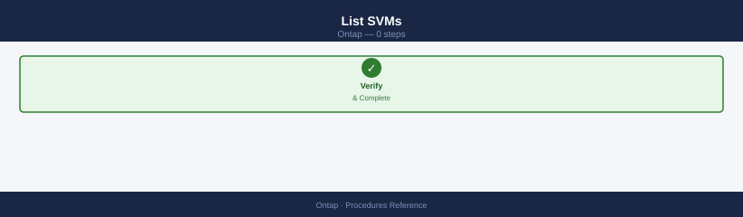
Vserver Type Subtype State Admin-State
----------- ---------- ---------- -------- -----------
cluster1 admin running up
svm-prod-01 data running up
svm-prod-02 data running up
svm-dev-01 data running up
svm-nfs-01 data running up
Vserver Type State Admin-State
----------- ---------- -------- -----------
cluster1 admin running up
svm-prod-01 data running up
svm-prod-02 data running up
svm-dev-01 data running up
svm-nfs-01 data running up
Common errors
| Error | Fix |
|---|---|
Error: "vserver show" is not a recognized command. |
Ensure you are connected to the ONTAP cluster management interface via SSH or console, not the node shell. |
Error: This operation is not permitted: Insufficient privileges to run command "vserver show". |
Verify your user role has the "admin" or equivalent privilege level assigned in ONTAP. |
SVM Health¶
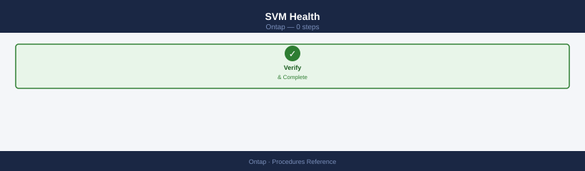
# Confirm all SVMs are running
vserver show -state !running
# Check SVM root volume health
volume show -vserver <svm_name> -volume <svm_name>_root
Vserver State Subtype
----------- -------- ---------
(no entries)
Vserver Volume State Status
------------- ---------------------------- ---------- ----------
prod-svm-01 prod-svm-01_root online healthy
Common errors
| Error | Fix |
|---|---|
Error: command not found: vserver |
Ensure you are connected to the ONTAP cluster management interface via SSH or the ONTAP CLI, not a local shell. |
Error: invalid vserver name "prod-svm-01" |
Replace <svm_name> with an actual SVM name from your cluster; use vserver show to list all available SVMs. |
Create an SVM¶
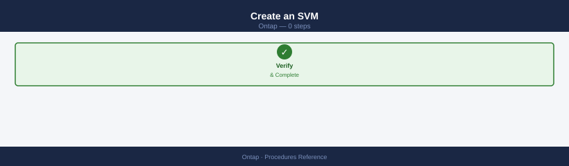
vserver create \
-vserver <svm_name> \
-aggregate <aggr_name> \
-rootvolume <svm_name>_root \
-rootvolume-security-style unix
Common errors
| Error | Fix |
|---|---|
Error: command failed: Aggregate "<aggr_name>" does not exist. |
Verify the aggregate name with storage aggregate show and use the correct name in the -aggregate parameter. |
Error: command failed: Vserver "<svm_name>" already exists. |
Choose a unique SVM name or delete the existing SVM with vserver delete before recreating it. |
Error: command failed: Security style "unix" is not valid for root volume. |
Use mixed, ntfs, or unix (ensure UNIX is capitalized); verify ONTAP version supports the chosen style for root volumes. |
LIF Management¶
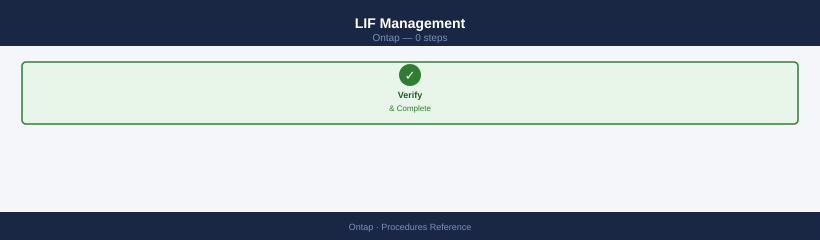
# List LIFs for an SVM
network interface show -vserver <svm_name>
# Create a data LIF
network interface create \
-vserver <svm_name> \
-lif <lif_name> \
-role data \
-home-node <node_name> \
-home-port e0c \
-address <ip> \
-netmask <mask> \
-data-protocol nfs,cifs
# Migrate a LIF to a different port
network interface migrate -vserver <svm_name> -lif <lif_name> -dest-node <node> -dest-port <port>
Vserver Interface IP Address Status Home Node/Port Current Node/Port
-------- --------- ---------- ------ --------------- -----------------
prod-svm nfs_lif_01 192.168.1.50 up node1/e0c node1/e0c
prod-svm cifs_lif_01 192.168.1.51 up node2/e0d node2/e0d
prod-svm mgmt_lif 192.168.1.10 up node1/e0a node1/e0a
prod-svm iscsi_lif_01 192.168.1.60 up node2/e0e node2/e0e
(no output — command completes silently)
[Job 123] Job succeeded: network interface migrate completed successfully.
Common errors
| Error | Fix |
|---|---|
Error: command failed: The specified home-port "e0c" does not exist on node "node1". |
Verify the port exists on the target node using network port show -node <node_name>. |
Error: command failed: Cannot migrate LIF "nfs_lif_01" because it is currently hosting an active connection. |
Migrate during a maintenance window or use network interface migrate -force-administrative-vlan true if necessary. |
DNS Configuration per SVM¶
vserver services name-service dns show -vserver <svm_name>
vserver services name-service dns create \
-vserver <svm_name> \
-domains <domain> \
-name-servers <dns_ip1>,<dns_ip2>
Vserver: svm-prod-01
Domains: corp.example.com, example.com
Name Servers: 8.8.8.8, 8.8.4.4
Timeout (secs): 2
Attempts: 1
(no output — command completes silently)
Common errors
| Error | Fix |
|---|---|
Error: "svm-prod-01" is not a valid vserver name |
Verify the SVM name exists with vserver show and use the exact name from the Vserver column. |
Error: DNS create failed: Name servers already configured |
Delete the existing DNS configuration first using vserver services name-service dns delete -vserver <svm_name> before creating a new one. |
NIS / LDAP Lookup¶
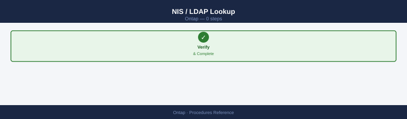
vserver services name-service ns-switch show -vserver <svm_name>
vserver services name-service ldap show -vserver <svm_name>
Vserver: prod-svm-01
Source
Service Database Order
------- -------- -----
hosts files, dns files, dns
passwd files, ldap files, ldap
group files, ldap files, ldap
netgroup files, ldap files, ldap
sudoers files, ldap files, ldap
Vserver: prod-svm-01
Enabled
LDAP Client Enabled: true
LDAP Server: ldap-server-01.corp.local (192.168.1.50)
LDAP Server Port: 389
Bind DN: cn=admin,dc=corp,dc=local
Schema: RFC2307
Query Timeout (sec): 3
Min Bind Level: anonymous
Referral Chasing: disable
Group Member Filter: memberUid=*
Common errors
| Error | Fix |
|---|---|
Error: "vserver services name-service ns-switch show" is not a recognized command. |
Verify you are connected to the ONTAP cluster management interface and have appropriate admin privileges; this command requires ONTAP 9.2 or later. |
Error: Vserver "<svm_name>" does not exist. |
Replace <svm_name> with an actual SVM name from your cluster (run vserver show to list available SVMs). |
Stop / Start an SVM¶
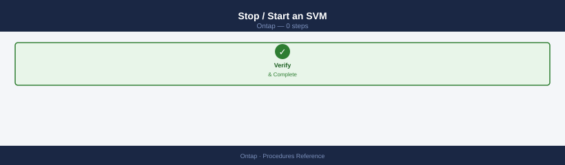
This command stops and starts a NetApp ONTAP SVM (Storage Virtual Machine). Here's realistic output:
vserver stop -vserver svm_prod_01
This will stop the Vserver "svm_prod_01" and all associated services.
Do you want to continue? {y|n}: y
Vserver "svm_prod_01" has been stopped.
vserver start -vserver svm_prod_01
Vserver "svm_prod_01" has been started.
Common errors
| Error | Fix |
|---|---|
Error: command failed: Vserver "svm_prod_01" is not in a state that allows this operation |
Verify the SVM is not already stopped or in a transitional state by running vserver show -vserver svm_prod_01 before attempting the operation. |
Error: command failed: Vserver "svm_prod_01" does not exist |
Confirm the SVM name is correct and exists in the cluster by running vserver show to list all available SVMs. |
Error: command failed: This operation is not permitted: Vserver is in Disaster Recovery relationship |
If the SVM is part of a SnapMirror DR setup, break or quiesce the relationship first using snapmirror quiesce or snapmirror break. |
Delete an SVM¶
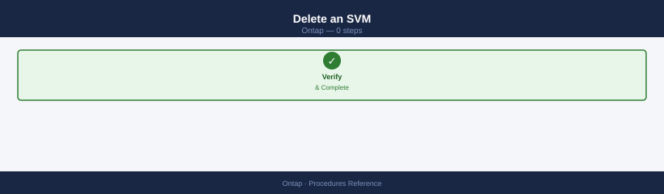
# Ensure no volumes except root
volume show -vserver <svm_name>
# Delete root volume and SVM
vserver delete -vserver <svm_name>
Vserver Volume Aggregate State Type Size
--------- ------------ ------------ ---------- ---- ----------
svm-prod root_svm aggr1 online RW 20.00GB
svm-prod data_vol_01 aggr1 online RW 500.00GB
svm-prod data_vol_02 aggr2 online RW 750.00GB
svm-prod backup_vol aggr1 online RW 1.00TB
Warning: Vserver "svm-prod" cannot be deleted while it contains non-root volumes.
Delete all data volumes first, then retry the vserver delete command.
Common errors
| Error | Fix |
|---|---|
Warning: Vserver "svm-prod" cannot be deleted while it contains non-root volumes. |
Delete all non-root volumes using volume delete -vserver <svm_name> -volume <volume_name> before attempting vserver deletion. |
Error: Vserver "svm-prod" is in use by one or more clients or protocols. |
Stop all active NFS/CIFS/iSCSI services and disconnect clients before retrying vserver deletion. |
SVM Common Issues¶
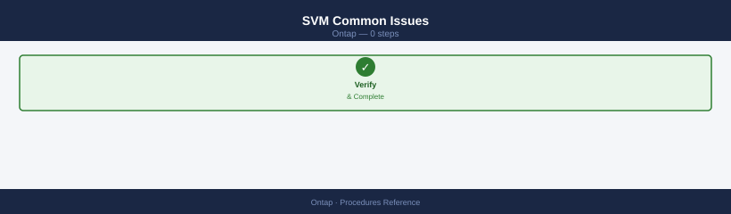
| Issue | Check | Action |
|---|---|---|
| SVM not running | Admin-state | vserver start |
| LIF not reachable | LIF status / port | Migrate LIF or fix port |
| Protocol not serving | Service enabled? | vserver nfs create or equivalent |
| DNS resolution failing | SVM DNS config | Verify DNS server IPs |
Volume Management¶
List Volumes¶
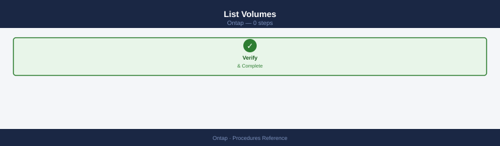
volume show
volume show -vserver <svm_name>
volume show -fields size,used,available,percent-used,state
Vserver Volume Aggregate State Type Size Used Available Percent-Used
--------- ------------ ------------ ---------- ----- ---------- ---------- --------- ------------
cluster1 vol_data_01 aggr_sas_01 online RW 500GB 245GB 255GB 49%
cluster1 vol_logs aggr_sas_01 online RW 100GB 87GB 13GB 87%
cluster1 vol_backup aggr_sas_02 online RW 2TB 1.8TB 200GB 90%
svm_prod vol_app aggr_sas_01 online RW 750GB 620GB 130GB 83%
svm_prod vol_snap aggr_sas_02 online RW 1TB 512GB 488GB 51%
svm_dev vol_test aggr_sas_01 online RW 250GB 45GB 205GB 18%
Vserver Volume Aggregate State Type Size Used Available Percent-Used
--------- ------------ ------------ ---------- ----- ---------- ---------- --------- ------------
svm_prod vol_app aggr_sas_01 online RW 750GB 620GB 130GB 83%
svm_prod vol_snap aggr_sas_02 online RW 1TB 512GB 488GB 51%
Size Used Available Percent-Used State
---------- ---------- --------- ------------ ------
500GB 245GB 255GB 49% online
100GB 87GB 13GB 87% online
2TB 1.8TB 200GB 90% online
750GB 620GB 130GB 83% online
1TB 512GB 488GB 51% online
250GB 45GB 205GB 18% online
Common errors
| Error | Fix |
|---|---|
Error: "svm_prod" is not a valid Vserver |
Verify the SVM name with vserver show and ensure you are connected to the correct cluster. |
Error: invalid field name "percent-used" |
Use the correct field name percent_used (underscore instead of hyphen) in the -fields parameter. |
Volume Health¶
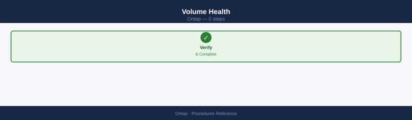
# Show offline or restricted volumes
volume show -state !online
# Show volumes nearing capacity
volume show -fields percent-used | awk '$2 > 80'
Vserver Volume State Type Aggregate
--------- ------------ ---------- ----- -----------
svm-prod vol_archive offline RW aggr_sas_01
svm-prod vol_backup restricted RW aggr_sas_02
Vserver Volume Percent Used
--------- ----------------- ------------
svm-prod vol_data_01 85%
svm-prod vol_logs 92%
svm-prod vol_tempdb 88%
svm-prod vol_archive_old 81%
Common errors
| Error | Fix |
|---|---|
Error: invalid query operator "!online" |
Use offline|restricted instead of !online in the volume show filter. |
Error: no matching rows |
Ensure the cluster is reachable with cluster show and that volumes exist in the Vserver with volume show. |
Create a Volume¶
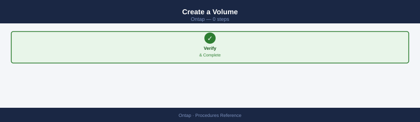
volume create \
-vserver <svm_name> \
-volume <vol_name> \
-aggregate <aggr_name> \
-size 500G \
-junction-path /<vol_name> \
-security-style unix
Volume <vol_name> created successfully on aggregate <aggr_name>.
Volume size set to 500GB.
Junction path /<vol_name> created.
Security style set to unix.
Volume is online and ready for use.
Common errors
| Error | Fix |
|---|---|
Error: command failed: No space left on device |
Verify the aggregate has sufficient free space with storage aggregate show -aggregate <aggr_name> and increase the aggregate capacity or reduce the volume size. |
Error: command failed: Invalid vserver name |
Confirm the SVM name exists and is spelled correctly by running vserver show to list all available SVMs. |
Error: command failed: Junction path already exists |
Remove the conflicting junction path with volume unmount -vserver <svm_name> -volume <existing_vol> or choose a different junction path name. |
Resize a Volume¶
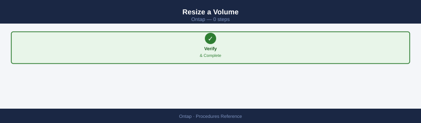
Volume modify successful: Volume "vol_name" size set to 1.00TB on Vserver "svm_name".
Common errors
| Error | Fix |
|---|---|
Error: command failed: No such volume |
Verify the volume name and SVM name are correct using volume show -vserver <svm_name>. |
Error: command failed: Insufficient space in aggregate |
Check available space in the aggregate with storage aggregate show -fields availsize and reduce the new size or add capacity to the aggregate. |
Volume Autosize¶
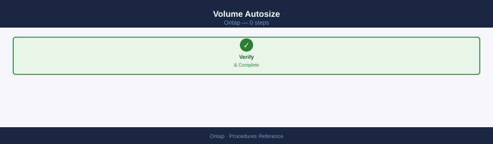
volume autosize -vserver <svm_name> -volume <vol_name> \
-mode grow_shrink \
-maximum-size 2T \
-grow-threshold-percent 85
Volume autosize has been successfully configured.
Vserver: svm-prod-01
Volume: vol_data_tier1
Mode: grow_shrink
Maximum Size: 2TB
Grow Threshold: 85%
Shrink Threshold: 50%
Common errors
| Error | Fix |
|---|---|
Error: "svm_name" is not a valid Vserver name |
Replace <svm_name> with an actual SVM name from your cluster (e.g., svm-prod-01). |
Error: Volume vol_name does not exist |
Verify the volume exists on the specified SVM using volume show -vserver <svm_name>. |
Error: Invalid maximum size value |
Ensure the maximum size is specified in valid units (T, G, M) and does not exceed the aggregate's available space. |
Volume Efficiency (Deduplication / Compression)¶
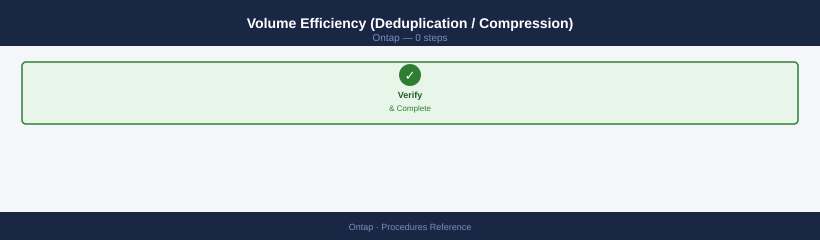
# Check efficiency state
volume efficiency show -vserver <svm_name> -volume <vol_name>
# Enable efficiency
volume efficiency on -vserver <svm_name> -volume <vol_name>
# Run deduplication manually
volume efficiency start -vserver <svm_name> -volume <vol_name>
Vserver Volume State Status Progress
--------- ------------ -------- ------------ ----------
prod-svm data_vol_01 Enabled Idle -
(no output — command completes silently)
Starting efficiency operation on volume data_vol_01 of Vserver prod-svm.
Efficiency operation started successfully.
Common errors
| Error | Fix |
|---|---|
Error: command failed: No such volume |
Verify the volume name with volume show -vserver <svm_name> and ensure it exists on the specified SVM. |
Error: Efficiency is already enabled on this volume |
Skip the enable step if efficiency is already active; check status with the first command before enabling. |
Move a Volume (Between Aggregates)¶
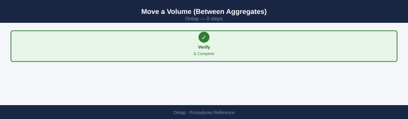
volume move start \
-vserver <svm_name> \
-volume <vol_name> \
-destination-aggregate <dest_aggr>
volume move show
Volume move operation initiated for volume vol_data01 on SVM prod_svm.
Operation ID: 1a2b3c4d-5e6f-7g8h-9i0j-1k2l3m4n5o6p
Vserver Volume State Progress
------------------- ---------------- ---------- ----------
prod_svm vol_data01 initializing 5%
prod_svm vol_archive completed 100%
prod_svm vol_logs cutover_phase 87%
Common errors
| Error | Fix |
|---|---|
Error: volume move start: Destination aggregate <dest_aggr> does not exist |
Verify the destination aggregate name with storage aggregate show and ensure it has sufficient free space. |
Error: volume move start: Volume <vol_name> is currently involved in another move operation |
Wait for the existing move to complete using volume move show or abort it with volume move abort -vserver <svm_name> -volume <vol_name>. |
Error: volume move start: Insufficient space in destination aggregate |
Check available space with storage aggregate show -aggregate <dest_aggr> -fields availsize and choose an aggregate with at least 110% of the source volume size. |
Take a Volume Offline / Online¶
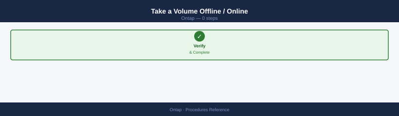
volume offline -vserver <svm_name> -volume <vol_name>
volume online -vserver <svm_name> -volume <vol_name>
Common errors
| Error | Fix |
|---|---|
Error: command not found: volume |
Use the ONTAP CLI directly via SSH to the cluster management IP or execute within the ONTAP shell context, not from a standard bash shell. |
Error: Invalid vserver name "<svm_name>" |
Replace <svm_name> with an actual SVM name from your cluster (verify with vserver show). |
Error: Volume <vol_name> is not in a state that allows this operation |
Ensure the volume is not already offline/online and check for active operations with volume show -vserver <svm_name> -volume <vol_name> -fields state. |
Delete a Volume¶
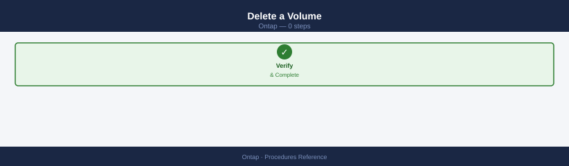
# Offline first
volume offline -vserver <svm_name> -volume <vol_name>
# Delete
volume delete -vserver <svm_name> -volume <vol_name>
Common errors
| Error | Fix |
|---|---|
Error: command failed: There are mounted LUNs in the volume. |
Unmount all LUNs and delete snapshots before attempting to offline the volume. |
Error: command failed: Volume is not in a state that allows this operation. |
Ensure the volume is online and not currently in use by checking volume show -vserver <svm_name> -volume <vol_name> before running offline. |
Volume Common Issues¶
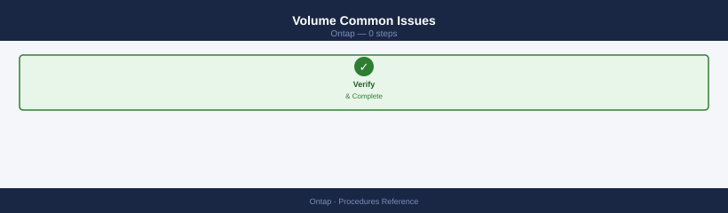
| Issue | Check | Action |
|---|---|---|
| Volume full | Percent-used | Resize or enable autosize |
| Volume offline | State | Bring online or investigate |
| Poor efficiency | Dedup/compress off | Enable volume efficiency |
| Mount fails | Junction path | Verify -junction-path set |
Protocols¶
ONTAP supports NFS, SMB/CIFS, iSCSI, FCP (Fibre Channel), and NVMe over Fabrics. Protocol access is configured per SVM.
NFS¶
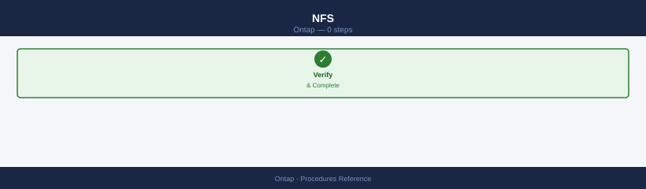
# Check NFS service status per SVM
nfs show -vserver <svm_name>
# List NFS exports
vserver nfs export-policy rule show -vserver <svm_name>
# Show NFS clients connected
nfs connected-client show -vserver <svm_name>
Vserver: prod-svm-01
NFS Enabled: true
NFS v3 Enabled: true
NFS v4 Enabled: true
NFS v4.1 Enabled: true
UDP Enabled: true
TCP Enabled: true
Policy Name: default
Rule Index: 1
Access Level: ro
Client Match Spec: 10.42.0.0/16
RO Rule: sys
RW Rule: none
Superuser Security: sys
Policy Name: data-export
Rule Index: 1
Access Level: rw
Client Match Spec: 10.42.10.0/24
RO Rule: sys
RW Rule: sys
Superuser Security: none
Vserver: prod-svm-01
Client IP: 10.42.10.45
Protocol: nfs3
Access Time: 2024-01-15 14:32:18 +00:00
Idle Time: 45 seconds
Common errors
| Error | Fix |
|---|---|
Error: "prod-svm-01" is not a valid vserver name |
Verify the SVM name exists with vserver show and use the exact name from the Vserver column. |
Error: command not found: nfs |
Ensure you are connected to the ONTAP cluster CLI (not the node shell); use system node run -node <nodename> -command "nfs show" if needed. |
SMB/CIFS¶
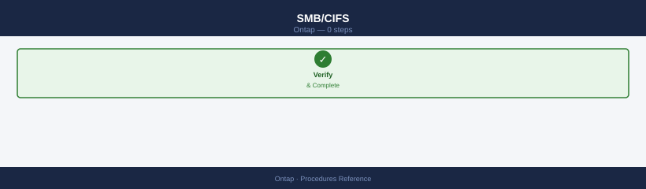
# Check CIFS server status
cifs show -vserver <svm_name>
# List CIFS shares
vserver cifs share show -vserver <svm_name>
# Show active CIFS sessions
cifs session show -vserver <svm_name>
Vserver: prod-svm-01
CIFS Server Name: PROD-FS-01
Status: running
NetBIOS Aliases: PROD-FS-ALIAS
Workgroup: WORKGROUP
Comment: Production File Server
Domain: corp.example.com
Domain Workgroup: corp.example.com
Vserver Share Name Path Comment
prod-svm-01 data /vol/data Shared Data Volume
prod-svm-01 users /vol/users User Home Directories
prod-svm-01 backups /vol/backups Backup Storage
prod-svm-01 archive /vol/archive Archive Storage
Vserver: prod-svm-01
Node Vserver Session ID Client IP User Name Open Files
cluster-01 prod-svm-01 1 192.168.1.45 CORP\jsmith 3
cluster-01 prod-svm-01 2 192.168.1.67 CORP\mchen 1
cluster-01 prod-svm-01 3 192.168.1.89 CORP\agarcia 5
Common errors
| Error | Fix |
|---|---|
Error: "prod-svm-01" is not a valid vserver name |
Verify the SVM name with vserver show and ensure you have cluster admin privileges. |
Error: CIFS server is not running on Vserver "prod-svm-01" |
Start the CIFS server with vserver cifs start -vserver <svm_name> before querying sessions. |
Error: command not found: cifs |
Use the full command path vserver cifs show -vserver <svm_name> instead of the shorthand cifs show. |
iSCSI¶
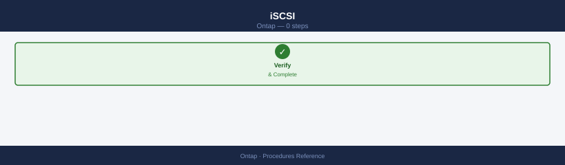
# Check iSCSI service status
iscsi show -vserver <svm_name>
# List iSCSI LIFs
network interface show -vserver <svm_name> -data-protocol iscsi
# Show connected iSCSI initiators
iscsi initiator show -vserver <svm_name>
# Show iSCSI target portal groups
iscsi tpgroup show -vserver <svm_name>
Vserver: svm-prod-01
Target Name: iqn.1992-08.com.netapp:sn.a1b2c3d4e5f6:svr.svm-prod-01:target.lun0
Administrative Status: up
Operational Status: up
Listen Data LIFs: 10.20.30.41, 10.20.30.42
Interface Vserver IP Address Netmask Status MTU
-------- ----------- --------------- --------------- ------ -----
iscsi_lif1 svm-prod-01 10.20.30.41 255.255.255.0 up 1500
iscsi_lif2 svm-prod-01 10.20.30.42 255.255.255.0 up 1500
Vserver Initiator Name Auth Type
----------- ------------------------------------------------ ----------
svm-prod-01 iqn.1991-05.com.example:host-db-01.local CHAP
svm-prod-01 iqn.1991-05.com.example:host-db-02.local CHAP
svm-prod-01 iqn.1991-05.com.example:host-app-03.local none
Vserver Target Name TPGT Portals
----------- ------------------------------------------------ ---- -------
svm-prod-01 iqn.1992-08.com.netapp:sn.a1b2c3d4e5f6:svr... 1 10.20.30.41:3260
svm-prod-01 iqn.1992-08.com.netapp:sn.a1b2c3d4e5f6:svr... 1 10.20.30.42:3260
Common errors
| Error | Fix |
|---|---|
Error: "svm_name" is not a valid Vserver name |
Replace <svm_name> with the actual SVM name (e.g., svm-prod-01) or list available SVMs with vserver show. |
Error: There are no records matching your query |
Verify the SVM exists and iSCSI service is enabled on it with vserver iscsi show -vserver <svm_name>. |
FCP (Fibre Channel)¶
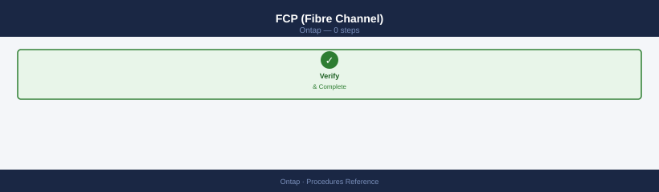
# Check FCP service status
fcp show -vserver <svm_name>
# List FCP LIFs (FC target ports)
network interface show -vserver <svm_name> -data-protocol fcp
# Show connected FC initiators
fcp initiator show -vserver <svm_name>
# Show FC target adapter status
system node hardware unified-connect show
Vserver Status
--------------- ------
prod-svm up
Interface Vserver Address Status Admin Status
--------------- --------------- --------------- ------- ---------------
fc_lif_01 prod-svm 50:0a:09:81:2c:3a up up
fc_lif_02 prod-svm 50:0a:09:81:2c:3b up up
Initiator WWPN Vserver Status Connected LIFs
------------------------ --------------- ------- ----------------
50:00:14:40:5a:2b:1c:d0 prod-svm logged-in fc_lif_01
50:00:14:40:5a:2b:1c:d1 prod-svm logged-in fc_lif_02
50:00:14:40:5a:2b:1c:d2 prod-svm logged-in fc_lif_01
Node Adapter Slot Status Speed Mode
--------------- ------- ------- ------- ------- -------
cluster-01 0a 1 enabled 16Gb initiator
cluster-01 0b 2 enabled 16Gb target
cluster-02 0a 1 enabled 16Gb target
cluster-02 0b 2 enabled 16Gb target
Common errors
| Error | Fix |
|---|---|
Error: "prod-svm" is not a valid Vserver name |
Verify the SVM name exists with vserver show and use the correct name in the command. |
Error: FCP service is not enabled on Vserver "prod-svm" |
Enable FCP on the SVM using vserver fcp create -vserver <svm_name>. |
Error: No FC target adapters found |
Confirm FC adapters are installed and licensed with system license show and storage port show -type FC. |
Protocol on LIF Verification¶
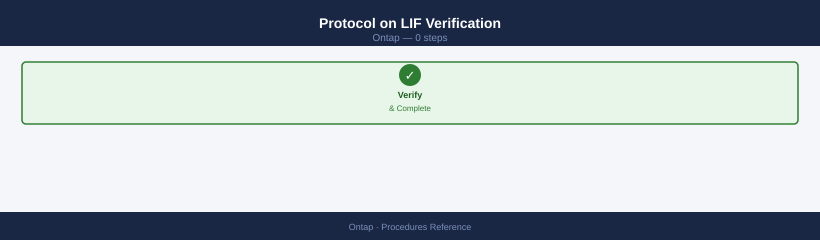
# Show all data LIFs and their protocols
network interface show -role data -fields vserver,lif,address,data-protocol
Vserver LIF Address Data-Protocol
----------- ------------------ ---------------- ----------------
svm-prod data_lif_01 192.168.1.45 nfs,cifs
svm-prod data_lif_02 192.168.1.46 nfs,cifs
svm-dev data_lif_03 10.20.30.50 nfs
svm-backup data_lif_04 10.20.30.51 iscsi
svm-backup data_lif_05 10.20.30.52 iscsi,fc
svm-analytics data_lif_06 172.16.5.100 nfs
6 entries were displayed.
Common errors
| Error | Fix |
|---|---|
Error: unknown field "data-protocol" |
Use network interface show -fields protocols instead, as data-protocol is not a valid ONTAP field name. |
Error: command not found |
Ensure you are connected to the ONTAP cluster via SSH or the ONTAP CLI; this command runs only in cluster or admin SVM context. |
Enable/Disable a Protocol on an SVM¶
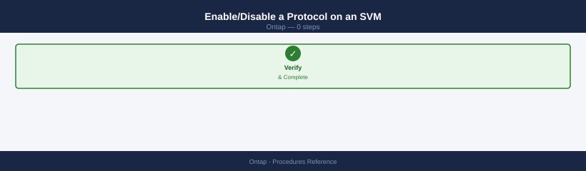
# Enable NFS
vserver nfs create -vserver <svm_name> -v3 enabled -v4.1 enabled
# Enable CIFS (requires AD join)
cifs setup -vserver <svm_name>
# Enable iSCSI
iscsi create -vserver <svm_name>
vserver nfs create -vserver prod_svm -v3 enabled -v4.1 enabled
(no output — command completes silently)
cifs setup -vserver prod_svm
This command will create a CIFS server and join it to the domain.
Enter the username to authenticate with Active Directory: admin
Enter the password:
CIFS server "PROD_SVM01" created successfully and joined to domain "corp.example.com"
iscsi create -vserver prod_svm
(no output — command completes silently)
Common errors
| Error | Fix |
|---|---|
Error: command failed: CIFS setup requires Active Directory domain to be configured |
Configure DNS and domain settings on the SVM with dns create and active-directory create before running CIFS setup. |
Error: command failed: iSCSI cannot be created on a vserver with no data aggregates |
Assign at least one data aggregate to the SVM using vserver modify -vserver <svm_name> -aggr-list <aggr_name>. |
Protocol Common Issues¶
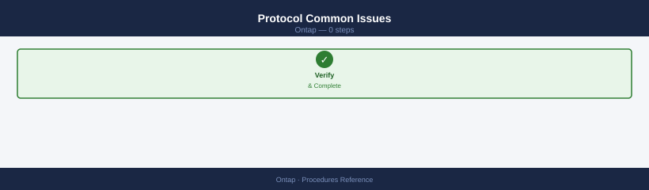
| Issue | Check | Action |
|---|---|---|
| NFS mount fails | Export policy rules | Verify client IP matches export rule |
| CIFS share inaccessible | CIFS server joined to AD | Re-join AD if needed |
| iSCSI sessions dropping | LIF and network status | Check LIF availability and switch ports |
| FC initiator not logging in | Zoning and WWPN masking | Verify SAN zoning and LUN masking |
Verify¶
- Confirm the operation completed without errors in the log or management UI
- Verify the expected state change is visible (service running, object created, config applied)
- Document the outcome in the change record